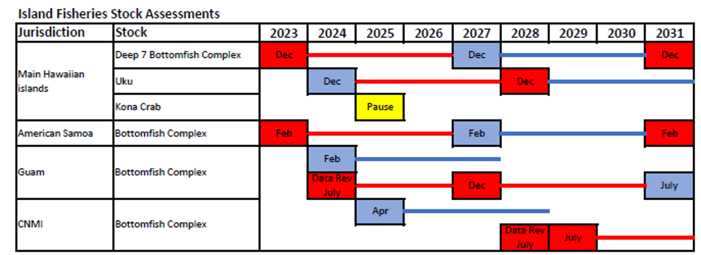

MHI Deep 7
Assessment Research Track
How is this Different?
Management Track, What we have in place.
Mandated to Provide Stock Assessments Every 3 Years
Focus: Routine updates to inform fishery management decisions (e.g., Catch limits)
Goal: Provide the best available science within strict timelines for management decision-making


How is this Different
Research Track, What We are Introducing.
A More Comprehensive & Flexible Approach
Not Limited by Management Deadlines – Allows for deeper investigation and innovation
Purpose:
- Explore new methods & improve assessment models
- Evaluate transitions (e.g., complex-level to single-species assessments)
Not Immediately Used for Management – Instead, research track findings feed into future management track assessments